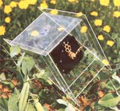
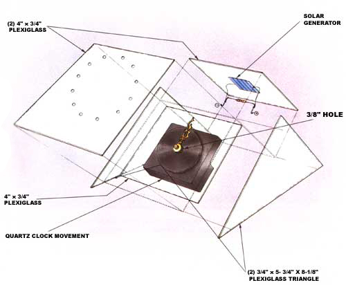

Here's a simple but effective way to keep tabs on the sun.
Since our society has (finally!) begun to make the transition into the solar age, it's become easy to acquire general information about the average intensity and duration of sunshine in different parts of the United States. What's more, we can now get very precise data on the efficiencies of solar collectors that have been tested under controlled laboratory conditions.
However, as would-be sun-energy users, we need numbers indicating the performance of solar systems that must work in environments which don't necessarily offer either perfect conditions or the exact amounts of sunlight predicted by the National Weather Service's estimates. In short, we need to know how the conditions in our backyards stack up against the area's averages ... and how well we can expect devices forced to work in those surroundings to perform.
To answer those questions accurately, we have to take measurements. But that's been a good deal easier said than done ... up until now. You see, MOTHER's insolation monitor, which costs a couple of hundred dollars less than a sophisticated solar pyrometer, will provide the information needed -though it's admittedly somewhat less accurate than more expensive laboratory instruments-- concerning the daily duration of sunshine at a particular location ... and it'll give an inkling of ol' Sol's intensity, too.
This insolation monitor is easy both to understand and to build. The device consists of a solar generator (made up of several cells) and an electric quartz clock movement. When sunlight impacts the surface of the photovoltaic generator, electricity is produced and fed directly to the clock. By setting the hands to "high noon" (12 o'clock) before the sun rises, and then reading the elapsed time indicated by the hands at the end of the day, You can get a true reading of the number of sun-hours during one diurnal cycle.
Furthermore, to account for differences in solar intensity, a small resistor is placed across the leads coming from the photovoltaic generator. The resistor puts a load on the photovoltaic cells, which-in turndrags down the voltage somewhat. Unless the intensity of the light is above a certain level, there won't be enough power to run the clock ... so those "weak sun" hours won't be recorded.
Because the insolation monitor is dependent upon photovoltaic cells, it's probably best suited to simulating a solar electric system's potential performance. The data you generate with the instrument can, however, be used to determine the practicality of solar collectors that will heat water or air, as well.
The housing for the monitor is made entirely of acrylic plastic (plexiglass is one commonly available example of this type of material). I began with a single-strength sheet (0.080 inch thick) of the type that's normally used as a storm window covering and can be purchased from just about any hardware store. Cut the plastic pane (using a saber saw fitted with a fine-toothed blade) into several sections: two pieces that each measure 4" X 4-3/4", one that's 4" X 4", and another measuring 5-3/4" X 5-3/4". (Be sure to use a slow speed when drilling or sawing any thermoplastic, to avoid melting the material around the tool.) The 5-3/4"-square section should then be cut in half diagonally to yield two right triangles.
Next, drill a 3/8" hole through the center of the 4 " square. You can dress the edges of the hole with a small rat-tail file, a tapered reamer, or a larger drill bit held in your hand.
The shaft of the clock movement fits through the 3/8" opening, so you'll have to remove the hands (and the face, if it has one) to fit it to the 4" square. (A quartz clock movement should be available from most arts and crafts stores, or you can order one from Klockit, Dept. TMEN, P.O. Box 629, Lake Geneva, Wisconsin 53147. Order model Q-70.) You may also wish to add a manufactured clock face to your timer. However, I simply drilled twelve 1/8" indents, arranged in a circle around the shaft, to indicate the hours.
Now, glue all the plastic parts together, using the exploded drawing as a guide. Although acrylic cement is probably the best adhesive for the job, you may have a little trouble finding any (I did). If so, Duco cement-or one of the cyanoacrylate glues--will have to do. I recommend that you secure the rectangular pieces to only one triangular side at a time ... then attach the other side as the final step. This will allow you to align the parts more easily, and it'll also prevent glue from being smeared by parts that slip during assembly.
The lightweight solar generator used in this project can be purchased from Edmund Scientific, Dept. TMEN, 10 1 East Gloucester Pike, Barrington, New Jersey 08007. Ask for catalog number 42,465. Simply attach the solar cell to the plastic face, at a point opposite the clock movement, by tacking down its two wire leads with drops of glue. (Be careful to avoid getting any adhesive on the cell's face.)
You'll notice that the wires on the photovoltaic unit are bare and thus are not color coded. Take the one that originates from the light-sensitive side of the chip and solder it to the negative (-) battery contact on the clock. The other wire, which comes from the back of the solar generator, should be connected to the positive ( +) battery terminal. (If you're at all confused about which wire is which , check the instructions that come with the solar cell.) Finally, solder a 220-ohm resistor (Radio Shack part number 271-015) between the two battery terminals.
MOTHER's insolation monitor is designed to perform a number of tasks, but its most important job will be helping you choose a suitable site at which to set up solar equipment. And, though there are several different ways to go about checking the available insolation at a given spot, I've gotten the quickest results using the procedure that follows.
First, find a promising location and set up your monitor so that it faces south. Because you'll probably be doing this early in the morning, you'll need a compass to determine the orientation. (Don't forget to correct for the variation between magnetic and true north!) You'll also want to shim the monitor housing to angle the device to suit your latitude and needs. When the solar cell is lying flat, the incident angle of the sunlight is 45' . . . which is about right for many locations in the continental U.S. However, you can increase the angle (for higher latitudes or winter use) by raising the back of the monitor, or reduce it (for lower latitudes or summer operation) by adding material under the front edge.
Now, just set the clock's hands at noon, and let it run all day. In the evening, or first thing in the morning, record the number of hours that have elapsed and reset the hands for the next day's session. The more days you can take readings for a particular site, the more accurate your measurements will be. By repeating the procedure for the same period of time at several different locations, a pattern will begin to emerge. Some spots will prove to be very obviously unsuitable, while you'll be able to carefully compare those that have good potential. Who knows, the garage roof may prove to be best of all, even though that tree obscures the sun until 10:00 AM!
Once you've picked a site, you can go on to use your insolation monitor to estimate the performance you'll be able to expect from a given solar collector. To do so, permanently install the monitor at the location, and measure the solar hours over an extended period. In this instance, it's easiest just to let the device be a cumulative counter. That is, simply note the reading each day without resetting the dial, and count the number of revolutions the hour hand makes during your study.
This procedure will allow you to predict what a solar energy system of a given size will be able to do for you, so you can expand or trim the square footage of your planned unit to match your demands. Then again, dont't hesitate to experiment with different altitude angles (the height above the horizon) and headings east or west of true . Keep in mind that every solar site is unique.
And, of course, you could make the solar monitor just for fun: to keep tabs on the sunlight in your area ... to measure the south length of the day or simply to create a unique science fair project. If nothing else, you can amaze your friends with your batteryless daytime patio clock!
|
 |
 |
|